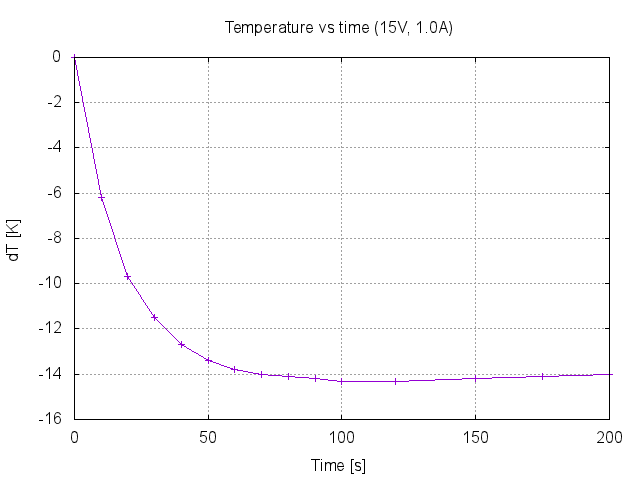
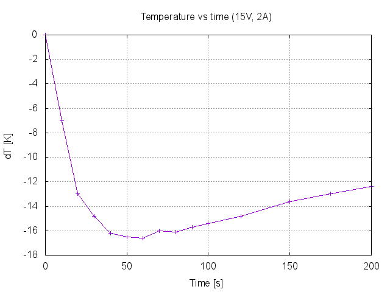
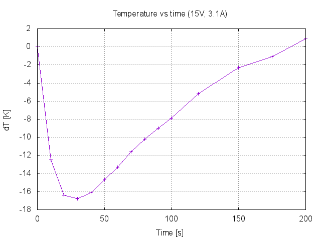

Measurement: Peltier cooler temperature vs time vs current Date: 2016-06-07 Equipment: - Fluke 179 multimeter - K-type thermocouple - Tenma DC power supply - 35W peltier element (PM-30X30-36) Environment: - Temperature 29.2C Setup: - Peltier element attached to an aluminum case (~150mm x 100mm x 70mm) - Thermocouple wire taped to the middle middle of peltier element Results: Input parameters: 15V, 1A  Input parameters: 15V, 2A  Input parameters: 15V, 3.1A  Conclusions: - Insufficient heat transfer from hot side of the element ruins performance - Needs a better way to dissipate the heat from the element (heat sink, fan etc)